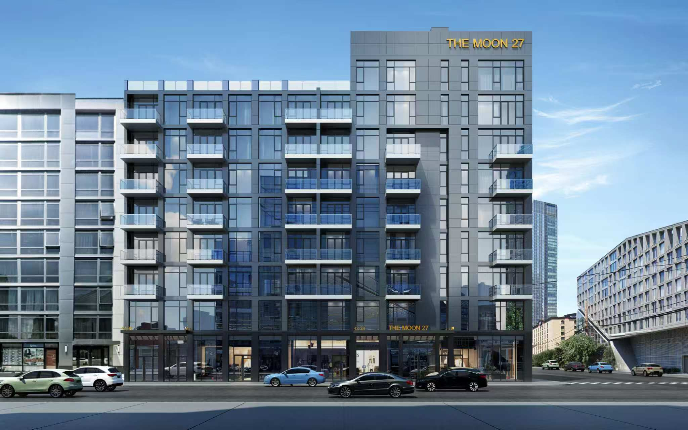
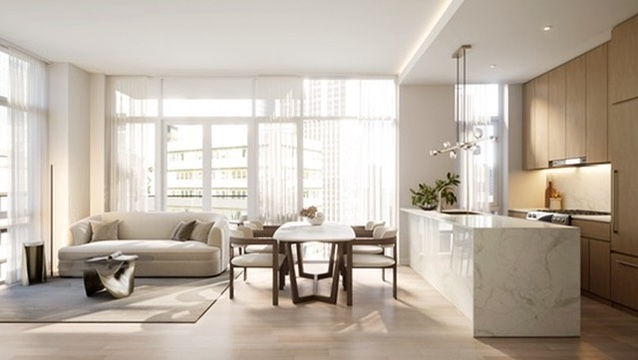
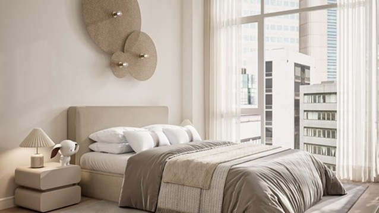
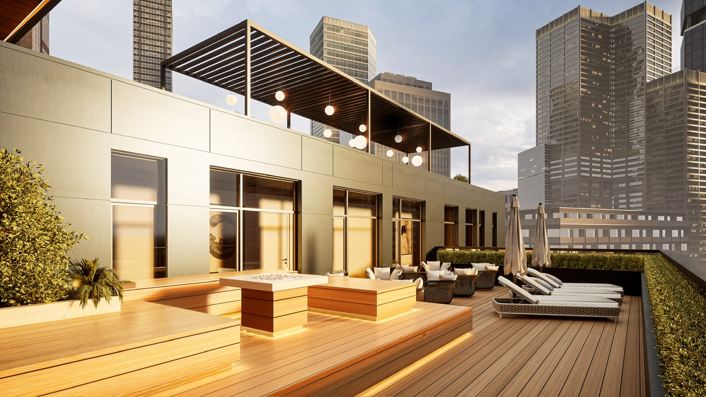

Project 01 · In progress
The Moon 27
Long Island City, NY 11101
A contemporary mixed-use building in Long Island City, bringing ground-floor commercial space together with residences above. The design is defined by expansive windows, private balconies, and a landscaped roof terrace, creating light-filled homes within the changing skyline of Queens.


